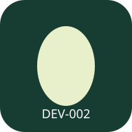

TamagoRegistro de campoPrueba operativaREGISTRO OPERATIVO · EXPERIMENTAL
Flujo de recogidas
Identifícate, registra lo ocurrido y consulta el estado de tus huevos.
Preparando pantalla sin red…
Los datos dependen de este navegador y origen. Exporta respaldo; el dispositivo puede eliminar almacenamiento.
1 · Identificar y elegir contexto
El catálogo completo se consulta online. Solo se conserva el ámbito preparado abajo para abrir la identidad sin red. No cambia ni atribuye las recogidas sintéticas.
Comprobando sesión…
Al comprobar la sesión se bloquea el perfil local; después vuelve a abrirlo con tu contraseña personal.
Registrar entrega a Bodega · requiere conexión. Usa únicamente recogidas ya recibidas por el servidor.
Tu identidad en esta tableta
Con sesión y red, selecciona empresa, sede, galpón y lote arriba y prepara tu identidad en esta tableta. Luego podrás abrirla y registrar aquí sin conexión. Los registros sintéticos del área legado permanecen independientes.
Identidad local bloqueada.
PASO 2 · REGISTRAR
Registrar recogida
El origen y el autor se toman del perfil abierto. Una, dos o tres recogidas reales; no inventes ceros para completar tres.
Abre un perfil para registrar o consultar sus recogidas.
PASO 3 · ESTADO
Tus registros
Abre un perfil para consultar sus registros.
Abre tu perfil y sesión online para enviar tus pendientes.
El archivo exportado conserva el paquete original y su estado inicial pendiente para recuperación; el acuse local se muestra por separado. Contiene datos legibles, IDs y firmas. El contenido local de la cola queda cifrado; sus identificadores de búsqueda siguen visibles al navegador.
Laboratorio separado · recogidas sintéticas DEV-002
Área legado · recogidas sintéticas DEV-002
Registrar un hecho
Un origen diario por empresa, lote, galpón y fecha. Una a tres recogidas reales; no inventes ceros para completar tres.
Registros locales pendientes
Leyendo almacenamiento…
Exportar o recuperar no significa enviar, sincronizar ni aceptar. Nunca se vacía la cola. Cambiar empresa en el formulario no es un control de acceso.